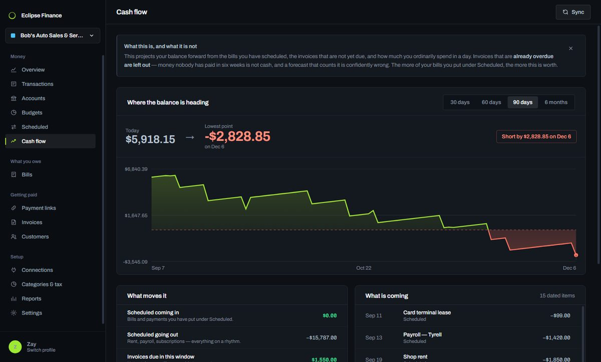
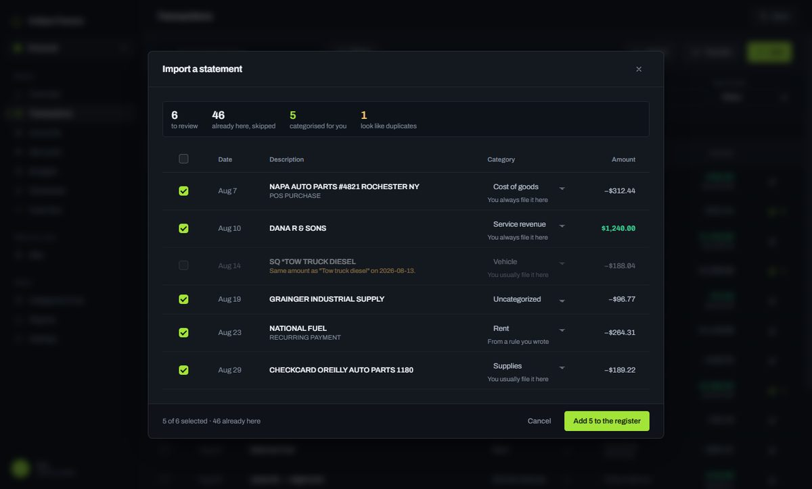
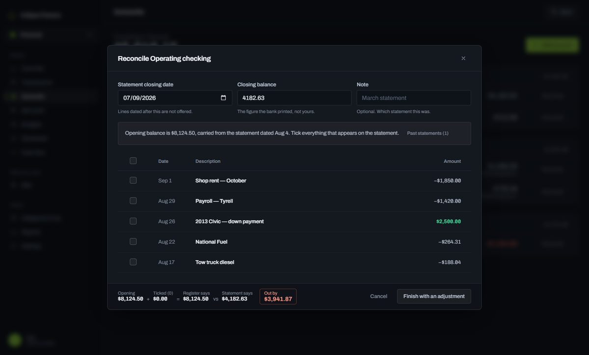
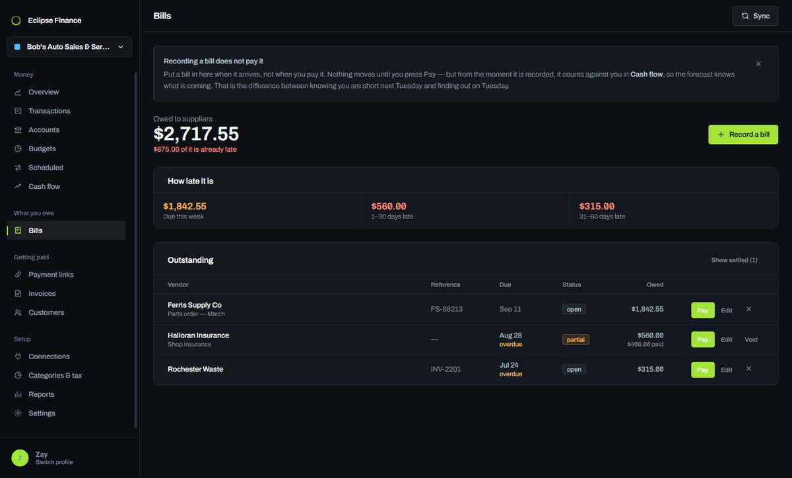
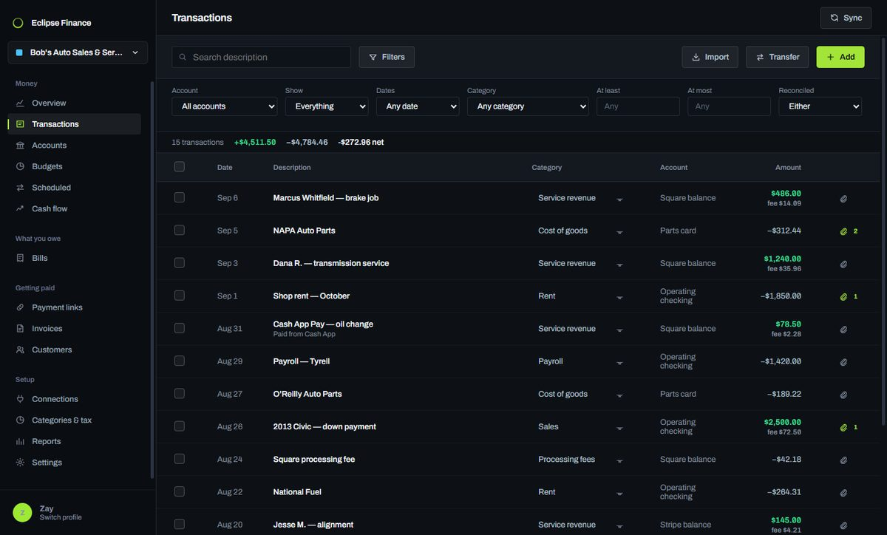

The alpha is open to everyone. No invitation, no waiting list, nothing to confirm — download it and start. It is free while it is an alpha, and the only thing asked in return is that you say what broke.
Finances you can actually read.
Bookkeeping that works online or off, keeps your books on your own disk or in the cloud as you choose, and bends to how your business actually runs instead of the other way round. Cheap on purpose — knowing where your money stands should not be a line item you dread.
Other platforms
Before you run it
These builds are not code signed yet. Windows will say the publisher is unrecognised — choose More info, then Run anyway. On a Mac, right-click the app and choose Open the first time.
That warning means nobody has vouched for the publisher yet. It is not a claim that anything is wrong with the app, and we would rather say so here than have you find out from a red dialog.

Cash flow — where the balance is heading, and the day it is lowest.
Four decisions everything else follows from.
Most accounting software makes these choices for you. Here they are yours, and they are the reason the rest of the app looks the way it does.
Online or off — it does not care
Every screen works with the network unplugged. No loading spinner waiting on a server, no "you appear to be offline", no afternoon lost because somebody else's service is having a bad day. Connect it when you want a payment processor synced or an update; the rest of the time it simply does not need to be.
Local or cloud — and you can change your mind
Your books are a file on your own disk. Want them on a second machine? An optional cloud account will carry an encrypted copy across, and let you delete that copy once it has arrived. Where your data sits is a setting, not a business model.
Room for more than one of you
Teams are being built so an owner, a bookkeeper and an accountant can work in the same books at the same time, rather than emailing a spreadsheet in circles and hoping nobody edited the wrong copy. One set of numbers, several people, and a record of who changed what.
Shaped around your business, not a template
Categories, tax buckets, budget periods and automatic rules are all yours to define, and the app grows as you add to it. A shop, a freelancer and a household do not think about money the same way, and none of them should have to adopt somebody else's chart of accounts to get started.
Numbers that explain themselves at a glance.
It reads your bank's own files
Download the file your bank offers for Quicken — .ofx, .qfx or .qbo — and it imports directly. No column mapping, no spreadsheet surgery, and no third party holding your banking login.
Those files carry the bank's own transaction ids, so importing the same statement twice adds nothing the second time. It suggests categories from how you filed the same places before, and flags anything that merely looks like a duplicate instead of deciding for you.

Tick your statement off, line by line
The opening balance carries from the last statement, so each one continues the one before and the chain cannot be quietly re-based.
It only closes when the difference is zero — or when you knowingly write a balancing entry, which appears in the register as a real transaction rather than hiding in a fudge column. Reconciled lines then lock, so last quarter cannot change under you.

Know what is coming before it leaves
Record a bill when it arrives, not when you pay it. Nothing moves until you press Pay — but from that moment it counts against your forecast.
Aging buckets show how late everything is, because "we are sixty days out on that" means something specific to both sides of a supplier call.

A register that reads like a statement
Date on the left, amount on the right, one line per transaction, categories editable in place. Filter by date, category, amount or whether a line is reconciled — and the totals move with the filter.
Attach the receipt to the line it belongs to. The file is copied into your books, so tidying your Downloads folder later cannot empty the evidence behind a tax return.

Where this is going, said before it is built.
Everything below is planned rather than finished. It is written here in advance so you can hold the work to it.
The cloud as a removal van, not a landlord
Every cloud accounting package works the same way: your books live on their server and the app on your desk is a window onto it. Stop paying and the window closes.
The plan here inverts that. Your books stay on your machine. When you want them on a second computer you send an encrypted copy up, pull it down on the other machine, then delete the cloud copy whenever you like. Both computers keep their own full copy. The cloud held it in transit and holds nothing afterwards.
Encrypt and upload a copy from the machine that has your books.
Download it on the second machine, which now holds its own full copy.
Delete the cloud copy the moment you no longer need it.
Both machines keep working, online or off, with nothing left on a server.
Teams, for the books more than one person touches
Most small businesses have at least two people near the numbers — an owner and a bookkeeper, a partner, an accountant at quarter end. Today that means passing a file back and forth and hoping nobody edits the wrong copy.
Teams will let several people work in the same books at once, each with their own sign-in, and keep a record of who changed what. The audit trail the app already writes exists for exactly this.
A cloud account will be optional, and cheap
Storing data on somebody else's hardware costs money, so the account that does it will cost money. What it will never do is become the price of opening your own books: the app works without one and will keep working without one, and the file on your disk stays readable whether or not you are a customer.
The details, so you can judge them yourself.
- Your password
-
Hashed with
scryptat N=215, r=8 — deliberately slow and memory-hard, so guessing at it costs real hardware. Compared in constant time, so how long a wrong answer takes reveals nothing about how close it was. - Payment processor keys
-
Encrypted by your operating system's own keychain — DPAPI on Windows,
Keychain on macOS, libsecret on Linux — and tied to your OS user
account. Where no keychain exists they fall back to
AES-256-GCMunder your passphrase. Plaintext keys are held only long enough to sign one request and never reach the part of the app that draws the screen. - Your recovery code
- 160 bits from the system random source, shown once, stored only as a hash. Single use: recovering with it clears it, because a live recovery code is a second permanent key to your books.
- Backups
-
Every file inside a backup carries a
SHA-256checksum. A damaged or truncated archive is refused rather than half-restored, and a restore verifies everything before touching what you have — then sets the old copy aside rather than deleting it. - Telemetry
- None. No analytics, no crash reporting, no usage pings. The only outbound requests are the ones listed below, and you can verify that with any network monitor.
Everything that leaves the machine
The whole list, so you can check it yourself.
- Checking for updates
- Asks GitHub whether a newer version exists. Sends nothing about you.
- Payment processors
- Only if you connect Stripe, Square or PayPal yourself. Your keys live in your operating system's keychain, never in the app's own files.
- Nothing else, unless you switch it on
- Your transactions, balances, customers and receipts go nowhere. If you later turn on cloud sync, that will be a thing you chose, said plainly, and revocable.
What this does not do
Two things worth knowing before you trust it with anything, stated here rather than left for you to discover.
- The ledger file is not encrypted at rest
- Anyone who can reach your unlocked computer can read it, the same as any document on your disk. Full-disk encryption — BitLocker or FileVault — is the right answer today, and at-rest encryption is on the list.
- The builds are not code signed yet
- Which is why Windows warns that the publisher is unrecognised and macOS wants a right-click then Open. It also means you are trusting the download itself; every build is published from a public CI run rather than from anybody's laptop.
Built in the open, shipped often.
Loading the release history…
The things worth asking first.
What does it cost?
Nothing during the alpha, and the aim is to stay genuinely cheap after it. Whatever the pricing turns out to be, the file holding your books stays readable on your own machine — being a customer and having access to your own accounts are not the same thing here.
Can I try it right now?
Yes. Download it, make an account on your own machine, and start. There is no invitation, no waiting list and no email to confirm — it is an alpha, so the honest ask in return is that you tell us what broke.
Does it really work offline?
Yes — every screen. The only things needing a connection are syncing a payment processor and checking for updates, and neither blocks anything else.
Where exactly are my books kept?
In a single database file in your user folder, beside a folder of any receipts you attach. Settings shows you the exact path and opens it.
Is the file encrypted?
Not yet — it is protected by your computer's user account, like every other file on your disk. Payment-processor keys are encrypted, in your OS keychain. We would rather say this plainly than imply more.
Will there be a cloud version?
An optional paid cloud account is planned, designed to move an encrypted copy of your books between your own machines and then let you delete that copy — not to become the place your books live. See Coming next.
Can more than one person use it?
Not yet. Teams are being built so an owner, a bookkeeper and an accountant can work in the same books with a record of who changed what.
How much can I change?
Categories, tax buckets, budget periods, recurring schedules and automatic rules are all yours to define, and templates give a sensible starting point for a shop, a freelancer or a household.
Which banks does it support?
Any bank that lets you download a statement — .ofx, .qfx and .qbo import directly, and CSV works with a quick column check. There is no live bank connection to break.
Personal or business?
Both, kept separate. A business book gets invoices, customers and payment links; a personal one gets net worth instead and is not cluttered with the rest.